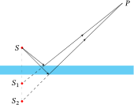
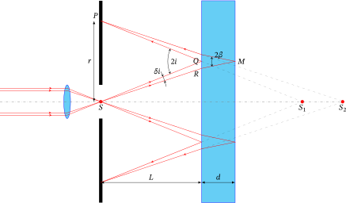
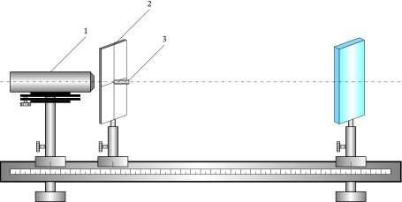

Робота 1 Вивчення інтерференції світла при відбиванні від товстої скляної пластини
Мета роботи
Вивчення явища інтерференції світла, дослідження інтерференційної картини, отриманої при відбиванні світла від товстої скляної пластини; визначення показника заломлення скляної пластини (довжини хвилі лазера, товщини пластини).
Ключові слова: когерентність, інтерференція світла, оптична довжина ходу хвилі, умова мінімуму та максимуму інтерференції
1 Теоретичне підґрунтя

Рис. 1.1. Схема інтерференції методом поділу амплітуди
У цій роботі вивчається інтерференційна картина, що виникає при освітленні єдиним світловим пучком товстої плоскопаралельної скляної пластини, тобто використовується метод поділу амплітуди. В цьому випадку світлові промені, що інтерферують формуються при відбиванні
світла від граней пластини (див. рис. 1.1).
У будь-яку точку \(P\), що знаходиться з тієї ж сторони від пластинки, що і джерело, приходять два променя (при малому коефіцієнті відбиття1 та при малих кутах падіння, повторні
відбивання від внутрішніх поверхонь пластинки можна не брати до уваги, оскільки енергія пучків, що зазнали двох та більшого числа відбивань дуже мала). Ці промені утворюють інтерференційну картину. Для визначення вигляду смуг можна уявити собі, що промені виходять з уявних
зображень \(S_1\) і \(S_2\) реального джерела \(S\). На віддаленому екрані, розташованому паралельно пластині, інтерференційні смуги мають
вигляд концентричних кілець, центр яких знаходиться на осі, що перпендикулярна до пластини і проходить через джерело \(S\).
1 близько 4% для поширених сортів скла
1.1 Схема дослідної установки та робочі формули

Рис. 1.2. Схема дослідної установки
В роботі використовується варіант побудови оптичної схеми, де пластина освітлюється світловим пучком від точкового джерела (яке моделюється фокусом лінзи, що освітлюється лазером, рис. 1.2). Для опису інтерференційної картини необхідно
визначити, які промені сходяться в кожній точці екрану і яка оптична різниця ходу між ними.
На рис. 1.2 показаний хід двох інтерферуючих променів, що приходять в точку спостереження \(P\). Для того, щоб промені зійшлися в одній точці, має виконуватися умова:
Оскільки кути дуже малі, то ми можемо скористатись наближеними формулами \(\tg { i} \approx i\), Прості тригонометричні перетворення з урахуванням закону заломлення світла (\(\frac { i}{\beta } = n\)) призводять до наступного виразу для різниці кутів падіння цих променів:
\(\seteqnumber{0}{1.}{1}\)
\begin{equation}
\delta i = \frac {d}{nL} i. \label {eq:dalpha}
\end{equation}
Останній доданок \(\frac {\lambda }{2}\) враховує зміну фази хвилі при відбиванні від середовища з більш високим показником заломлення («втрата напівхвилі»).
При використанні наближених виразів для функцій малих кутів (\(i \approx \frac {r}{2L}\), \(\frac {1}{\cos i} \approx 1 + \frac { i^2}{2}\), \(\beta \approx \frac { i}{n}\), \(\frac {1}{\cos \beta }\approx 1 + \frac { i^2}{2n^2}\)) співвідношення (1.3) зводиться до:
З отриманого співвідношення видно, по-перше, що різниця ходу залежить тільки від кута \(i\) (кут заломлення \(\beta \) пов’язаний з кутом падіння \(i\) законом Снеліуса \(\sin i = n \sin \beta \)). Отже, вона буде однаковою для всіх точок екрану з однаковим \(i\), тобто для кіл з
центром в точці \(S\). Це означає, що інтерференційна картина повинна складатися з концентричних кілець, приблизний вигляд яких показаний на рис. 1.3.
По-друге, зі співвідношення (1.2) видно, що \(\delta i \ll i\), тобто, інтерферуючі промені мають практично рівні кути падіння на пластину, рівні нахили. Тому смуги, що спостерігаються на інтерференційній картині
називаються смугами рівного нахилу [2, §6, стор. 85].
Найбільшою оптична різниця ходу при нормальному падінні променів (\(i = 0, r = 0\)) і дорівнює \(\Delta _{\max } = 2nd - \frac {\lambda }{2}\). Далі вона монотонно спадає з ростом \(r\).
Мінімуми інтерференційної картини спостерігаються при таких значеннях \(r\) при яких оптична довжина ходу стає рівною:
де ціле число \(m\) (\(m \in \mathbb {Z}\)) – порядок інтерференції. Причому, слід зазначити, що порядок інтерференції зростає від периферії екрану до його центру.
Прирівняємо формули (1.4) та (1.5) і отримаємо вираз:
отже, побудувавши графік залежності \(r^2 = f(m)\), можна визначити при фіксованому \(L\) будь-яку з величин \(\lambda \), \(n\) або \(d\), якщо відомі дві інші.
2 Опис робочої установки

Рис. 1.4. Робоча установка
Схема установки показані на рис. 1.4. До складу установки входять: лазер \(1\), короткофокусна оптична система \(3\) з екраном
спостереження \(2\), скляна плоскопаралельна пластина \(4\). Ці вузли установки закріплені в рейтерах, встановлених на металеву основу. Пучок лазера падає на збиральну лінзу \(3\), на оправі якої закріплений екран спостереження таким чином, що фокальна площину лінзи поєднана з площиною цього екрану. Екран спостереження має отвір для проходження світлового пучка. Сфокусований лінзою світловий пучок можна
розглядати як точковий джерело світлової хвилі зі сферичним хвильовим фронтом. Цей пучок падає на непаралельну пластину, встановлену перпендикулярно осі пучка. Основна частина пучка проходить через пластину і затримується захисним екраном. світлові пучки, відбиті в зворотному
напрямку від передньої і задньої граней пластини, потрапляють на екран спостереження, утворюючи на ньому інтерференційну картину концентричних темних і світлих кілець. Слід зазначити, що симетрія інтерференційної картини визначається симетрією ходу променів в установці. В даному
випадку це осьова симетрія пучка лазера і сферичної лінзи. На поверхню екрана нанесена міліметрова шкала для вимірювання розмірів інтерференційної картини.
3 Експериментальні подробиці
Відстані між об’єктами на оптичній лаві вимірюються за допомогою міліметрової шкали, що нанесено на лаві, і відраховуються від рисок, що нанесені на штативах. Довжина хвилі гелій-неонового лазера, що використовується в експерименті, дорівнює \(632.85\) нм. Фокусна відстань
збиральної лінзи, розташованої в центрі екрана, дорівнює \(f = 13 \pm 1\) мм. Показник заломлення скла, з якого зроблена пластинка, наближено дорівнює \(1.5\).
4 Хід роботи
1.Встановіть плоскопаралельну пластину \(4\) на відстані \(l = 50-70\) см відстані від екрану \(2\), зорієнтувавши її межі перпендикулярно
осі світлового пучка.
2. Виміряйте радіуси не менше шести темних кілець (для кожного кільця треба отримати 4 значення, що визначені по взаємно-перпендикулярним шкалам екрану \(2\) і усереднити).
Кільцям приписують номера \(m\) в порядку зростання їх радіусів (для зручності). Номер \(m = 1\) приписують першому темному кільцю, поблизу отвору в екрані.
3. Повторіть п. 2. ще 5 разів, зменшуючи щоразу відстань \(l\) від екрану \(2\) до пластини \(4\) приблизно на \(5\) см.
4. Для кожного значення \(l\) побудуйте графіки \(r^2(m)\). Врахуйте, що в формулу (1.6) входить відстань до пластини \(4\)
визначається не від самого екрану \(2\), а від фокусу лінзи \(3\), тому \(L = l - f\), де \(f\) — фокусна відстань лінзи \(3\).
6. Знайдіть показник заломлення скляної пластинки, знаючи довжину хвилі лазера \(\lambda = 632.816\) нм та товщину пластинки \(d\), яка зазначена на ній.
7. Обчислити похибку цієї величини.
Контрольні запитання
1. Які критерії мінімумів та максимумів інтерференції?
2. Чому інтерференційна картина має вигляд концентричних кілець?
3. За яким законом зменшується ширина інтерференційних кілець із зростанням їх радіусу?
4. Навіщо в вираз для оптичної різниці ходу інтерферуючих хвиль вводять доданок, рівний за модулем половині довжини хвилі світла?
5. Чому в якості джерела світла в роботі використовується лазер? Що буде, якщо лазер замінити колімованим пучком світла, що проходить крізь світлофільтр?
6. Скільки довжин хвиль укладається в оптичній різниці ходу для центру інтерференційної картини?